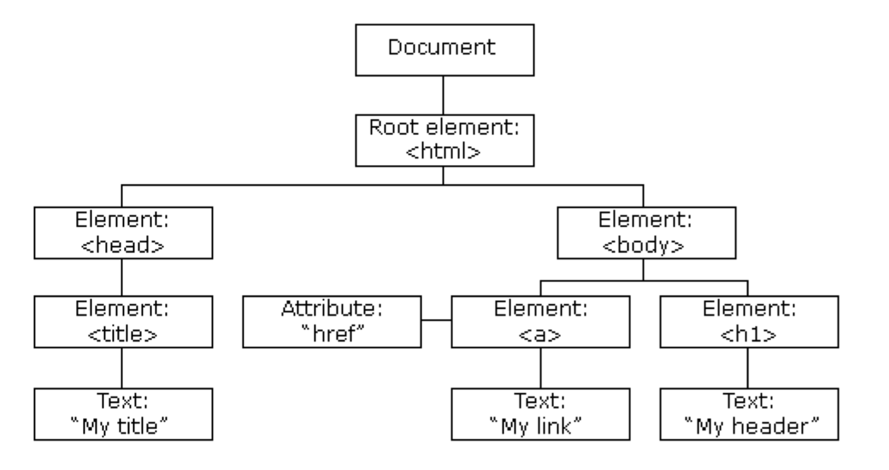

UNIDAD 4 - Manipulación del DOM
1. Modelo de Objetos del Documento (DOM)
El DOM (Modelo de Objetos del Documento) es un estándar del W3C que define cómo acceder a documentos como HTML y XML. Es una interfaz de programación de aplicaciones (API) de la plataforma W3C que permite a los scripts acceder y actualizar dinámicamente el contenido, la estructura y el estilo de un documento.
Es decir, si analizamos el documento html de la página web, nos vamos a encontrar una serie de etiquetas unas dentro de otras. DOM permite manejar esas etiquetas como objetos de la página, y de esta forma gestionarla dinámicamente.
- Estándar: El DOM es un estándar mantenido por el World Wide Web Consortium (W3C) que proporciona una representación estructurada de un documento.
- API: Sirve como una interfaz para la programación, permitiendo a los desarrolladores manipular la estructura, el estilo y el contenido del documento a través de lenguajes de scripting como JavaScript.
- Actualizaciones Dinámicas: Con el DOM, los scripts pueden modificar dinámicamente el contenido, la estructura y el estilo del documento, permitiendo aplicaciones web interactivas y reactivas.
Aquí tienes un ejemplo simple de cómo podrías usar el DOM para cambiar dinámicamente el contenido de un elemento HTML:
<!DOCTYPE html>
<html lang="es">
<head>
<meta charset="UTF-8">
<meta name="viewport" content="width=device-width, initial-scale=1.0">
<title>Ejemplo de DOM</title>
</head>
<body>
<h1 id="title">¡Hola, Mundo!</h1>
<button onclick="changeTitle()">Cambiar Título</button>
<script>
function changeTitle() {
// Accede al elemento DOM con el id 'title'
const titleElement = document.getElementById('title');
// Cambia el contenido del elemento
titleElement.textContent = '¡Hola, DOM!';
}
</script>
</body>
</html>
1.1 Historia del DOM
-
Web Temprana (1990s): La web comenzó con páginas HTML estáticas simples. No había una manera estándar de manipular el contenido o la estructura de estas páginas de manera dinámica.
-
Guerras Netscape e IE: Netscape Navigator e Internet Explorer (IE) fueron los dos navegadores dominantes. Cada uno desarrolló sus propios métodos para manipular documentos HTML, lo que llevó a problemas de compatibilidad.
-
Introducción de JavaScript (1995): Brendan Eich creó JavaScript para Netscape, permitiendo interacciones dinámicas básicas. Sin embargo, el enfoque de Netscape era diferente del de IE. Netscape Navigator 2.0 fue el primer navegador en implementar el denominado DOM Nivel 0.
-
Participación del W3C (1998): El World Wide Web Consortium (W3C) intervino para estandarizar cómo se deberían acceder y manipular los documentos, resultando en la creación del Modelo de Objetos del Documento (DOM) Nivel 1.
-
DOM Nivel 1 (1998): Se lanzó la primera versión del DOM, proporcionando una manera estandarizada de manipular la estructura y el contenido del documento a través de diferentes navegadores.
-
DOM Nivel 2 (2000): Introdujo características más avanzadas como soporte para CSS, eventos y manipulación de documentos XML.
-
DOM Nivel 3 (2004): Expansión adicional de la API para incluir más características para la manipulación y navegación de documentos.
-
HTML5 y la Web Moderna (2010s): HTML5 trajo actualizaciones significativas al DOM, haciéndolo más robusto y permitiendo aplicaciones web más complejas. Los navegadores modernos han adoptado e implementado estos estándares de manera consistente.
El desarrollo y la estandarización del DOM han sido cruciales para crear la web dinámica e interactiva que conocemos hoy, proporcionando una manera consistente para que los scripts interactúen y modifiquen documentos web a través de diferentes navegadores.
--> Estándar DOM Nivel 3 por el W3C
2. Estructura del Árbol DOM
Un árbol DOM es una estructura de árbol cuyos nodos representan el contenido de un documento HTML o XML. Cada documento HTML o XML tiene una representación en árbol DOM. Por ejemplo, considera el siguiente documento:
<html lang="es">
<head>
<title>My Tittle</title>
</head>
<body>
<a href="http://alink.com">My Link</a>
<h1>My Header</h1>
</body>
</html>
Tiene un árbol DOM que se ve así:

Aunque el árbol anterior es similar al árbol DOM del documento, no es idéntico, ya que el árbol DOM real conserva el espacio en blanco.
Cuando un navegador web analiza un documento HTML, construye un árbol DOM y luego lo usa para mostrar el documento.
FUENTE: mdn web docs_
Reglas de Estructura del Árbol:
Para organizar la estructura del árbol, hay una serie de reglas:
- En el árbol de nodos, el nodo superior (documento) se llama raíz.
- Cada nodo, excepto el nodo raíz, tiene un padre.
- Un nodo puede tener cualquier número de hijos.
- Una hoja es un nodo con sin hijos.
- Los nodos que comparten el mismo padre son hermanos.
2.1 La Interfaz Node
Un Node es una interfaz abstracta que representa un solo nodo en el árbol. Estos nodos pueden ser un Documento, un Elemento, un DocumentFragment y más.
- Document: El nodo raíz del documento HTML.
- DocumentType: Un nodo que representa el DTD (Definición de Tipo de Documento) de la página.
- Element: Un nodo que representa un elemento HTML.
- Attr: Un nodo que representa un atributo de un elemento.
- Text: Un nodo que almacena el texto contenido dentro de un nodo Elemento.
- Comment: Un nodo que almacena un comentario en el documento HTML.
Interfaz Node
- Para manipular la información de los nodos, JavaScript crea un objeto llamado
Node. - Este objeto define propiedades y métodos para procesar documentos.
- También define un conjunto de constantes que identifican los tipos de nodos. Estos son los valores que la propiedad
nodeTypepuede tener:
| Constante | Descripción | Valor |
|---|---|---|
Node.ELEMENT_NODE |
Representa un nodo de elemento. | 1 |
Node.ATTRIBUTE_NODE |
Representa un nodo de atributo. | 2 |
Node.TEXT_NODE |
Representa un nodo de texto. | 3 |
Node.CDATA_SECTION_NODE |
Representa un nodo de sección CDATA. | 4 |
Node.ENTITY_REFERENCE_NODE |
Representa un nodo de referencia de entidad. | 5 |
Node.ENTITY_NODE |
Representa un nodo de entidad. | 6 |
Node.PROCESSING_INSTRUCTION_NODE |
Representa un nodo de instrucción de procesamiento. | 7 |
Node.COMMENT_NODE |
Representa un nodo de comentario. | 8 |
Node.DOCUMENT_NODE |
Representa el nodo del documento. | 9 |
Node.DOCUMENT_TYPE_NODE |
Representa el nodo de tipo de documento. | 10 |
Node.DOCUMENT_FRAGMENT_NODE |
Representa un nodo de fragmento de documento. | 11 |
Node.NOTATION_NODE |
Representa un nodo de notación. | 12 |
Propiedades y Métodos de la interfaz Node
| Propiedad/Método | Descripción |
|---|---|
nodeName |
Devuelve el nombre del nodo. |
nodeType |
Devuelve un código entero que representa el tipo de nodo. |
nodeValue |
Establece o devuelve el valor del nodo. Para nodos de elementos, esto es null. |
parentNode |
Devuelve el nodo padre del nodo especificado. |
childNodes |
Devuelve una NodeList de los nodos hijos del nodo especificado. |
firstChild |
Devuelve el primer nodo hijo del nodo especificado. |
lastChild |
Devuelve el último nodo hijo del nodo especificado. |
previousSibling |
Devuelve el nodo hermano anterior del nodo especificado. |
nextSibling |
Devuelve el nodo hermano siguiente del nodo especificado. |
textContent |
Establece o devuelve el contenido de texto del nodo y sus descendientes. |
appendChild(node) |
Agrega un nuevo nodo hijo al final de la lista de hijos de un nodo padre especificado. |
removeChild(node) |
Elimina un nodo hijo del nodo padre especificado. |
replaceChild(newNode, oldNode) |
Reemplaza un nodo hijo por otro en el nodo padre especificado. |
cloneNode(deep) |
Clona el nodo actual. Si deep es true, también clona todos los nodos descendientes. |
Estos métodos y propiedades proporcionan una variedad de maneras para manipular los nodos dentro del árbol DOM, permitiendo una amplia gama de operaciones en la estructura del documento.
Para saber más --> Interfaz Node @ mdn web docs_
3. La Clase Element
La clase Element representa un elemento en la jerarquía del DOM, heredando de la interfaz Node.
En el contexto del DOM (Modelo de Objetos del Documento), un elemento se refiere a un elemento HTML individual dentro de un documento HTML. Los elementos HTML son los bloques de construcción de las páginas web e incluyen etiquetas como <div>, <p>, <a>, <img>, entre otras.
Algunas Propiedades y Métodos de la clase Element
| Propiedad/Método | Descripción |
|---|---|
attributes |
Devuelve un NamedNodeMap de los atributos del elemento. |
classList |
Devuelve un DOMTokenList que contiene la lista de atributos de clase. |
id |
Establece o devuelve el ID del elemento. |
className |
Establece o devuelve el(los) nombre(s) de clase del elemento. |
tagName |
Devuelve el nombre de la etiqueta del elemento en mayúsculas. |
innerHTML |
Obtiene o establece el contenido HTML (incluyendo elementos hijos y texto) del elemento. |
outerHTML |
Obtiene o establece el contenido HTML (incluyendo el propio elemento) del elemento. |
textContent |
Obtiene o establece el contenido de texto del elemento y sus descendientes. |
setAttribute(name, value) |
Establece el valor de un atributo en el elemento especificado. |
getAttribute(name) |
Devuelve el valor del atributo con el nombre especificado en el elemento. |
removeAttribute(name) |
Elimina el atributo especificado del elemento. |
hasAttribute(name) |
Devuelve un Booleano que indica si el elemento tiene o no el atributo especificado. |
appendChild(node) |
Añade un nuevo nodo hijo al final de la lista de hijos de un nodo padre especificado. |
removeChild(node) |
Elimina un nodo hijo del DOM y devuelve el nodo eliminado. |
querySelector(selector) |
Devuelve el primer elemento que coincide con el selector CSS especificado dentro del subárbol del elemento. |
querySelectorAll(selector) |
Devuelve una NodeList de todos los elementos que coinciden con el selector CSS especificado dentro del subárbol del elemento. |
addEventListener(event, callback) |
Añade un listener de eventos al elemento. |
removeEventListener(event, callback) |
Elimina un listener de eventos del elemento. |
Leer más: --> Clase Element @ mdn web docs
3.1 Moviéndose a Elementos Relativos
Podemos navegar por el árbol del DOM desde un nodo dado a elementos relativos como padres, hijos y hermanos utilizando estas propiedades y métodos:
| Método/Propiedad | Descripción |
|---|---|
nextElementSibling() |
Devuelve el elemento inmediatamente siguiente al elemento especificado en el árbol del DOM. |
previousElementSibling() |
Devuelve el elemento inmediatamente anterior al elemento especificado en el árbol del DOM. |
parentElement() |
Devuelve el elemento padre del elemento especificado en el árbol del DOM. |
firstElementChild() |
Devuelve el primer elemento hijo del elemento especificado. |
lastElementChild() |
Devuelve el último elemento hijo del elemento especificado. |
childNodes() |
Devuelve una HTMLCollection en vivo de los elementos hijos del elemento especificado. |
childElementCount() |
Devuelve el número de elementos hijos del elemento especificado. |
Mucho ojo con las versiones antiguas de estos métodos, el firstChild(), lastChild(), o children(). Están y funcionan como les da la gana. Lo mejor es que utilicéis las funciones de la tabla anterior...
Y acordaros que childNodes() devuelve un HTMLCollection, por lo tanto, tendremos que acceder a sus elementos (o iterar en ellos), para tener objetos de tipo element. No podemos tratar a la HTMLCollection como un Element, porque no lo es, y peta.
3.2 Acceso Directo a Elementos
Podemos acceder de manera más directa a los nodos de los elementos del DOM con estos métodos:
Métodos para Acceso Directo a Elementos
getElementById(id): Recupera un elemento por su atributo ID. Si utilizamos este, debemos asegurarnos que elidbuscado es realmente único en toda la página. Si no puede devovler cualquiera de los que haya, y ojiito si son de diferente etiqueta..... Si estamos "pintando" datos de un JSON, lo lógico es que cambiemos losìdde todos los elementos en los que metemos los datos, para que no se repitan.getElementsByClassName(className): Recupera una colección de elementos que tienen un nombre de clase especificado.getElementsByTagName(tagName): Recupera una colección de elementos con el nombre de etiqueta especificado.querySelector(selector): Devuelve el primer elemento que coincide con un selector CSS especificado.querySelectorAll(selector): Devuelve una NodeList que contiene todos los elementos que coinciden con un selector CSS especificado.
Cuidadinnn! las funciones getElements... devuelven un HTMLColection (aunque tenga un sólo elemento). Por tanto, tenemos que manejarlas o iterar en ellas.
Si utilizamos las funciones de JQuery, debemos importar la libreria.
Ejemplo en JavaScript
// Ejemplo de acceso directo y manipulación
const paragraph1 = document.getElementById('paragraph1');
paragraph1.style.fontWeight = 'bold';
const elementsByClass = document.getElementsByClassName('myClass');
for (let element of elementsByClass) {
element.classList.add('highlight');
}
const elementsByTagName = document.getElementsByTagName('p');
for (let element of elementsByTagName) {
element.style.color = 'blue';
}
const elementByQuery = document.querySelector('#parent > p:nth-child(2)');
elementByQuery.textContent = 'Segundo párrafo modificado';
const elementsByQueryAll = document.querySelectorAll('.myClass');
elementsByQueryAll.forEach(element => {
element.style.border = '1px solid red';
});
3.3 Accediendo a los Atributos de un Elemento
El DOM permite el acceso directo a todos los atributos de un elemento. La propiedad attributes proporciona acceso a los atributos de un nodo de elemento.
El DOM ofrece varios métodos que facilitan el acceso directo para modificar, insertar y eliminar atributos de un elemento:
getAttribute(attributeName): Este método es equivalente aattributes.getNamedItem(attributeName).setAttribute(attributeName, attributeValue): Este método es equivalente aattributes.getNamedItem(attributeName).value = attributeValue.removeAttribute(attributeName): Este método es equivalente aattributes.removeNamedItem(attributeName).
También podemos acceder y modificar el valor de un atributo directamente usando la notación de puntos seguida del nombre del atributo:
3.4 El Atributo Style de un Elemento
Podemos modificar directamente las propiedades CSS de un elemento accediendo a su atributo style:
3.5 El Atributo Classlist
El atributo classList de un nodo de Elemento nos permite gestionar la lista de clases a las que pertenece el elemento HTML. Aunque el atributo en sí es de solo lectura, proporciona varios métodos para consultar y modificar las clases:
add( String [, String] ): Añade las clases especificadas. Si estas clases ya existen en el atributo class del elemento, se ignoran.-
remove( String [, String] ): Elimina las clases especificadas. Eliminar una clase que no existe no arroja un error. -
item( Number ): Devuelve el valor de la clase por índice en la colección. -
toggle( String [, force] ): Cuando solo se proporciona un argumento:- Alterna el valor de la clase; por ejemplo, si la clase existe, la elimina y devuelve
false; si no, la añade y devuelvetrue. - Cuando se proporciona el segundo argumento:
- Si el segundo argumento evalúa como
true, añade la clase especificada. - Si evalúa como
false, elimina la clase especificada.// Selecciona un elemento con clase "toggleElement" const element = document.querySelector(".toggleElement"); // Alterna una clase element.classList.toggle("hidden"); // Alterna con parámetro force (true/false) element.classList.toggle("visible", true); // Añade la clase "visible" element.classList.toggle("visible", false); // Elimina la clase "visible"
- Si el segundo argumento evalúa como
- Alterna el valor de la clase; por ejemplo, si la clase existe, la elimina y devuelve
-
contains( String ): Comprueba si la clase especificada existe en el atributo class del elemento. -
replace( oldClass, newClass ): Reemplaza una clase existente por una nueva.
4. Creando Nuevo Contenido
Al manipular el Modelo de Objetos del Documento (DOM) en JavaScript, existen varias formas de crear y agregar contenido nuevo a una página web. Inicialmente, podemos recurrir a un método más simple modificando directamente la propiedad innerHTML de un elemento.
Ejemplo:
// Selecciona un elemento por su ID
const container = document.getElementById('container');
// Modifica el innerHTML para agregar contenido nuevo
container.innerHTML = '<h2>Nuevo Contenido</h2><p>Este es contenido añadido dinámicamente.</p>';
// Añade un nuevo párrafo
container.innerHTML += '<p>Añadiendo nuevo párrafo.</p>';
Aunque innerHTML proporciona un enfoque directo, métodos más sofisticados ofrecen un mayor control y beneficios de rendimiento. Estos métodos implican la creación y manipulación directa de nodos del DOM:
4.1 Métodos para Crear Nuevos Nodos
En JavaScript, puedes crear varios tipos de nodos utilizando los siguientes métodos:
createElement(tagName): Crea un nuevo nodo de elemento con el nombre de etiqueta especificado.createTextNode(text): Crea un nodo de texto con el contenido de texto especificado.createAttribute(name): Crea un nodo de atributo con el nombre dado.createCDATASection(text): Crea un nodo de sección CDATA con el texto especificado.createComment(text): Crea un nodo de comentario con el texto especificado.createDocumentFragment(): Crea un nodo de fragmento de documento.
4.2 Añadir Nuevos Nodos al DOM
Una vez que has creado nodos, puedes agregarlos al DOM (Modelo de Objetos del Documento) usando métodos como:
- El método
append(): acepta múltiples parámetros, cada uno de los cuales puede ser un objeto de nodo o una DOMString (una cadena de texto o HTML). Añade cada parámetro como un hijo del elemento. appendChild(node): Este método acepta solo un parámetro, que debe ser un objeto de nodo. Añade el nodo hijo especificado como el último hijo del elemento.insertBefore(newNode, referenceNode): Inserta un nuevo nodo antes de un nodo existente especificado en el árbol del DOM.
Ejemplo:
// Crear un nuevo elemento <div>
const divElement = document.createElement('div');
divElement.textContent = 'Elemento Padre';
// Añadir múltiples nodos hijos usando append()
divElement.append(
'Nodo de Texto', // Añade un nodo de texto
document.createElement('span'), // Añade un elemento <span> vacío
'<strong>HTML</strong>' // Añade una cadena HTML como nodo de texto
);
// Seleccionar el div con la clase .main
const mainDiv = document.querySelector("div.main");
// Añadir el elemento div al div principal
mainDiv.appendChild(divElement);
Estos métodos te permiten crear y agregar dinámicamente elementos, texto, atributos, comentarios y más a tu página web utilizando JavaScript.